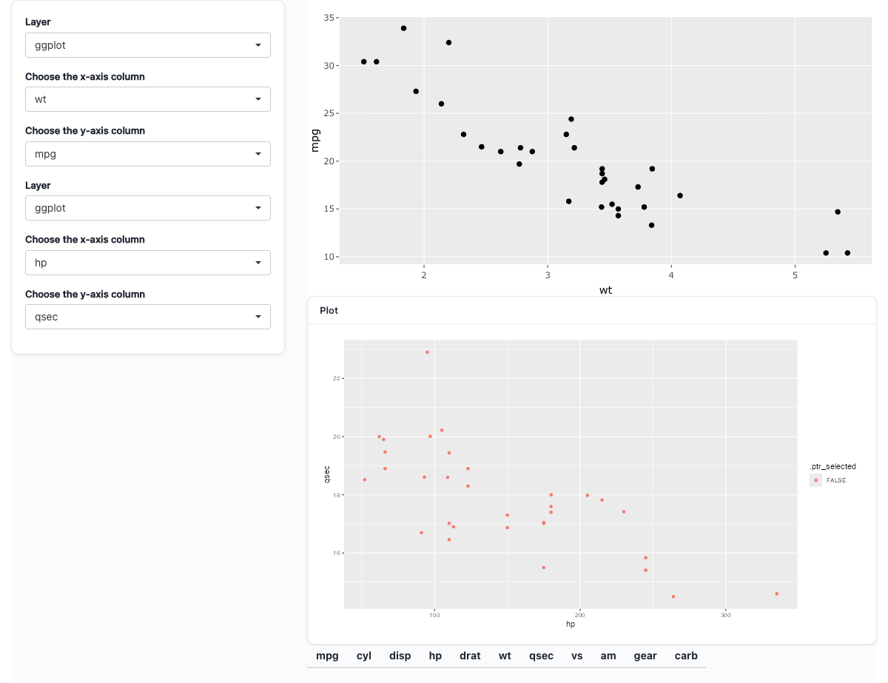

# Live mode: instance 2 redraws on every brush because its render body reads
# sel() un-isolated, so reading the selection is an ordinary reactive
# dependency. No trigger wiring — that is the whole point.
ptr_options(gate_draw = FALSE)
# Instance 1: an ordinary ggpaintr formula. Its drawn data is the snapshot the
# selection projects off.
f1 <- rlang::expr(
ggplot(mtcars, aes(x = ppVar(wt), y = ppVar(mpg))) + geom_point()
)
# Instance 2: an ordinary ggpaintr formula whose pipeline head is sel(). The
# flag projection appends a logical .ptr_selected; color = .ptr_selected.
f2 <- rlang::expr(
sel() |>
ggplot(aes(x = ppVar(hp), y = ppVar(qsec), color = .ptr_selected)) +
geom_point()
)
ui <- ptr_ui_page(
shiny::sidebarLayout(
shiny::sidebarPanel(
ptr_ui_controls(formula = f1, id = "p1"),
ptr_ui_controls(formula = f2, id = "p2")
),
shiny::mainPanel(
plotly::plotlyOutput("main_plotly"),
ptr_ui_error("p1"),
ptr_ui_plot("p2"),
ptr_ui_error("p2"),
shiny::tableOutput("sel_table")
)
)
)
server <- function(input, output, session) {
state1 <- ptr_server(f1, "p1")
# Instance 1 rendered through plotly, wired for linked selection.
output$main_plotly <- plotly::renderPlotly(
ptr_ggplotly(state1)
)
# The one selection, projected two ways off the instance-1 widget.
sel <- ptr_plotly_selection(state1, mode = "flag")
sel_rows <- ptr_plotly_selection(state1, mode = "rows")
# Instance 2: ordinary ggpaintr formula, pipeline head sel().
ptr_server(f2, "p2")
# Empty selection is a zero-row table (same columns), so no req() dance.
output$sel_table <- shiny::renderTable(sel_rows())
}14 Linked Selection
Brush a point cloud in one plot and watch a second plot — or a table — redraw to just the selected rows. ggpaintr ships two helpers that wire this up on top of the L3 custom-render pattern (Chapter 13): ptr_ggplotly() renders an instance through plotly with the selection plumbing already attached, and ptr_plotly_selection() hands you the current brush as a Shiny reactive. Both extract from the state returned by ptr_server(); core never learns about plotly or selection.
14.1 Why a helper
Linked brushing by hand is a known chore. You tag every row with a stable key, register plotly_selected and plotly_deselect, stash the brushed keys in a reactiveVal, and map those keys back onto the drawn data for the downstream view — and you redo the key tagging every time the source redraws, because a key only means a row within the draw that emitted it. The package keeps a pre-helper version of exactly this wiring at dev/scripts/plotly_linked_select.R; it is the shape these two helpers collapse. With the helpers, the key minting, the event registration, and the per-session store are internal. You write two calls.
14.2 The two helpers
ptr_ggplotly(state, ..., source = NULL) is the state-first counterpart to plotly::ggplotly(). Call it inside plotly::renderPlotly() on a live ptr_server() instance. It reads the drawn plot off state$runtime()$plot, mints a per-draw row key on a widget-only copy of the data (your data is never mutated), sets dragmode = "select", registers the selection events, and returns a plain plotly object — so your own plotly verbs keep piping after it:
output$plt <- plotly::renderPlotly({
ptr_ggplotly(state, tooltip = "all") |>
plotly::layout(legend = list(orientation = "h"))
})... forwards verbatim to plotly::ggplotly(). The helper owns the pre-draw req() guard internally, so you do not write one. plotly is an optional dependency (Suggests); ptr_ggplotly() aborts with an install hint if it is missing.
ptr_plotly_selection(state, mode = c("rows", "flag"), source = NULL) is the companion reader. Call it once in your server — not inside a render — on the same instance. It returns a Shiny reactive; calling that reactive (sel()) yields a data frame. Feed it to a table, a download handler, or the pipeline head of a second formula.
14.3 The headline: two linked plots, zero trigger wiring
The payoff is a second ggpaintr formula whose pipeline head is the selection reactive. Brush the plotly plot on the left; the formula on the right redraws with the brushed points highlighted, and a table below lists them. There is no trigger, no adapter, no selection plumbing in your server — instance 2 is an ordinary ggpaintr formula that happens to read sel().

.ptr_selected all FALSE) and the rows table shows only its column headers — the empty-selection state that renders without a req() dance. Brushing the top plot recolours the matching points via color = .ptr_selected and fills the table. The fixture mirrors the package’s browser-verified e2e fixture adr28-plotly-linked, dropping only its explicit source = (an e2e harness detail).The redraw-per-brush depends on live mode — ptr_options(gate_draw = FALSE). Live mode runs an instance’s render body un-isolated, so instance 2 reading sel() is an ordinary reactive dependency: a new brush invalidates sel(), which invalidates the draw. Under the default gate (gate_draw = TRUE) instance 2 would only redraw on its own Update-plot click, and a brush would change sel() with nothing watching. See Chapter 13 for the broader L3 contract this builds on.
14.4 Two projections of one selection
mode = picks how the same brush is shaped. Both project rows of the drawn data — state$runtime()$plot$data of the draw that produced the widget — never “the original object”.
mode |
Returns | When nothing is selected |
|---|---|---|
"rows" |
The selected slice of the drawn data | A zero-row data frame with the same columns — renders unconditionally, so a renderTable() consumer needs no req() dance |
"flag" |
The full drawn data plus a logical .ptr_selected |
.ptr_selected is all FALSE |
Use "rows" for a table or download of the selection itself. Use "flag" to drive a second formula — feed it as the pipeline head and map color = .ptr_selected, as in the headline. The internal row key (.ptr_row) never appears in either projection.
14.5 Coordinating the widget and the reader
ptr_ggplotly() and ptr_plotly_selection() find each other through plotly’s source = channel. Leave source = NULL (the default) on both and each derives the same id from the instance namespace — so for a single instance you simply omit it everywhere, as the headline does. If you set source = explicitly, it must be the same string on the widget call and on every selection reader for that instance.
14.6 When the selection resets
Keys are minted per draw, on the widget copy only, so a key from one draw is meaningless in the next. Every new draw of the source therefore resets the selection to empty:
- changing a placeholder picker on instance 1 (it redraws, re-mints keys),
- clicking Update plot on instance 1,
- swapping the data via an upload.
A plotly_deselect (double-click on the plot) clears it the same way. And before instance 1’s first draw there is no snapshot yet: the selection-fed instance shows its inline pre-draw state for one flush. These are documented behaviors, not bugs — the selection always names rows of the current draw, never an accumulated history.
14.7 Reserved names
Two column names are reserved and silently overwritten on collision: .ptr_row (the per-draw key, on the widget copy) and .ptr_selected (the flag projection’s column). If your own formula maps aes(key = ...), ggpaintr replaces it with .ptr_row and warns once — ggpaintr owns the key channel for linked selection.
14.8 Don’t do this
A few shapes look reasonable and silently do nothing. Each is rejected by design:
# 1. Brushing a non-identity-stat layer selects nothing. A geom_smooth() trace
# is a fitted line, not your rows, so its points carry no row key.
ggplot(mtcars, aes(ppVar(wt), ppVar(mpg))) + geom_smooth()
# 2. draw_trigger = sel never redraws. draw_trigger expects a click counter;
# handing it the selection reactive hands it a data frame, so the gate
# never fires and the brush is silently ignored. Use live mode (above),
# not a trigger, to drive a selection-fed instance.
ptr_server(f2, "p2", draw_trigger = sel)
# 3. Bare `sel` (not `sel()`) as a pipeline head errors: `data` cannot be a
# function. The reactive must be CALLED to yield its data frame.
sel |> ggplot(aes(...)) + geom_point() # wrong
sel() |> ggplot(aes(...)) + geom_point() # rightThere is also no state$selection() slot, no indices mode, and no persistence across draws — passing mode = "indices" aborts and names the allowed modes. The selection is exactly the two projections above, scoped to the current draw.